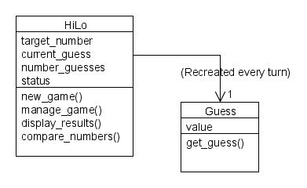

The close date of the assignment has passed. You can no longer submit an answer.
|
Title
|
Assignment 5
|
|
Due
|
Mar 13, 2009 5:00 pm
|
|
Status
|
In progress
|
|
Grade Scale
|
Ungraded
|
|
Modified by instructor
|
Mar 3, 2009 3:47 am
|
Instructions
The object of thisassignment, is to
implement a Ruby program that would play a HiLo game with the user
according to the following class design:

The Class Guess constructor should merely call the get_guess() method
and return. The get_guess() method is given below: You will note that in
this program every guess is a new instance of the Guess class.
########################################################
# Guess.get_guess
# Purpose: return a proper guess or end of game signal
# Tasks undertaken:
# 1. Loop until a proper input is obtained
# 2. Prompt user for input
# 3. Accept the input string and strip off the newline char
# 4. Reject input if non-digits were submitted
# 5. Check if the value is in the proper range
#
6. Establish
the integer value of the guess and return
# 7. Display error message and repeat otherwise
def get_guess()
loop do
print "Your choice 0-#{RANGE - 1} (-1 to quit):"
value = gets.chomp
if value =~ /[^0-9\-]/
puts " Invalid input. Please enter an integer\n"
else
@value =
value.to_i
case @value
when -1..(RANGE - 1)
@value = value.to_i
return
else
puts " Invalid number. Please try again."
end
end
end
end
You will need to create the HiLo class with 3 methods which are described below:
1) Constructor method:
Actions:
Welcome the user
2) New game setup method
Actions:
Zero the counters for the number of guesses
Set the target number to a random value between 0 and 99
Set the last guess value to -1
3) Method for managing the game
Actions:
Loop until the guess value equals the target
Create an instance of a guess
Increment the guess counter
Compare the guess value with the target number
if the guess was too high or too low tell this to the user
if the guess is to exit the program signal of -1, exit the
program with exit(0)
Congraduate the user and display the number of guesses that it took
The actual program code that uses these classes is given below:
RANGE = 100
g = HiLo.new
ans = 'y'
while ((ans == 'y') || (ans == 'Y'))
g.new_game
g.manage_game
print "Play another game (Y/N):"
ans = gets.chomp
end
puts "Good-bye"
Once assembled, the program should work in the following manner:
C:\A201>ruby hilow.rb
Welcome to Hi Low
--------------------------
Your choice 0-99 (-1 to quit):50
Too high
Your choice 0-99 (-1 to quit):25
Too low
Your choice 0-99 (-1 to quit):37
Too low
Your choice 0-99 (-1 to quit):45
Too low
Your choice 0-99 (-1 to quit):48
Too high
Your choice 0-99 (-1 to quit):47
Too high
Your choice 0-99 (-1 to quit):46
You have guessed correctly
in 7 guesses.
Play another game (Y/N):n
Good-bye
Please place the completed program in your drop box.
Submission